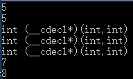
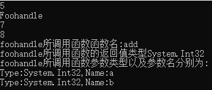
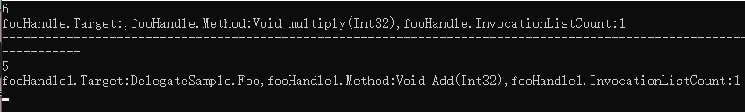
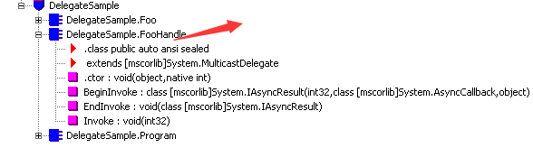
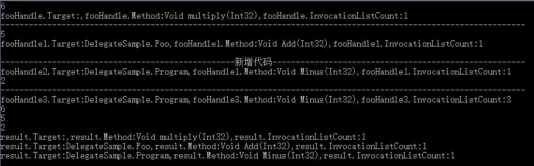
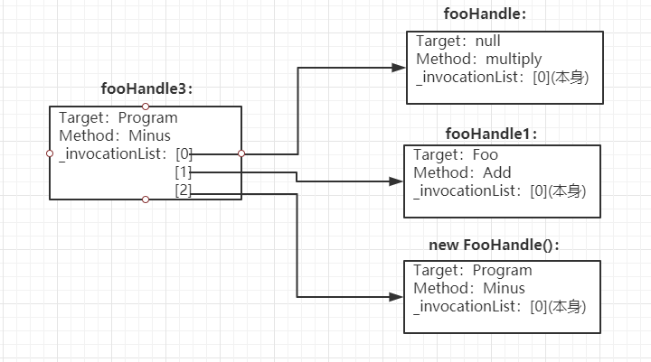
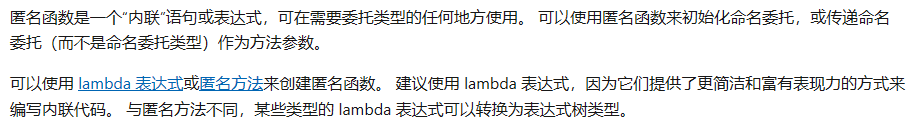

原文连接:https://www.cnblogs.com/ryzen/p/12009602.html
本文将通过引出几个问题来,并且通过例子来剖析C#中的委托以及用法，做抛砖引玉的作用
对于委托我发现大部分人都有以下问题，或者可能在面试中遇过这样的：
- 委托是不是相当于C/C++的函数指针?
- 委托究竟是什么？
- 委托究竟是用来干嘛的？
- 委托跟匿名函数的区别？
- 委托与事件的关系?
我们先来声明和使用C++的函数指针：
代码如下：
#include <iostream>
using namespace std;
typedef int (*Foohandle)(int a,int b);
int fooMenthod(int a, int (*foohandle1)(int a,int b)) //回调函数
{
return a + (*foohandle1)(2,3);//也可以写成foohandle1(2,3)
}
int add(int a,int b) {
return a + b;
}
int multiply(int a, int b) {
return a * b;
}
int main()
{
Foohandle foohandle = add;
int (*foohandle1)(int a, int b) = &add;
cout << foohandle(2,3)<<endl;
cout << foohandle1(2,3) << endl;
cout << typeid(Foohandle).name() << endl;
cout << typeid(foohandle).name()<<endl;
cout << typeid(foohandle1).name() << endl;
cout << fooMenthod(2, add)<<endl;
cout << fooMenthod(2, multiply);
}输出结果如下：

在代码中，我声明定义了两个函数add和multiply，然后用typedef方式声明了函数指针，接着我分别将add赋值给Foohandle这种函数指针类型的foohandle变量，然后用&add这种解地址的方式赋值给一个返回值为int，且带有两个参数的函数指针foohandle1，其中(*foohandle1)是函数名，最后我输出发现它们类型和输出都是一致的，再后面，我们定义了一个fooMenthod函数，返回值是int，且其中一个参数是函数指针，那么我再最后调用两次，分别将add和multiply函数，赋值给它，这时候add和multiply就是fooMenthod函数的回调函数，且此时输出结果会被两个函数内部不同实现所影响
那么我们可以做个总结：
- 首先函数指针就是一个内存地址，指向函数的入口内存地址
- 当函数指针做一个函数的参数时，确实会起到一定解耦作用
- 函数指针很明显是类型不安全的
我们再来声明和使用委托：
public delegate int Foohandle(int a, int b);
class Program
{
static void Main(string[] args)
{
Foohandle foohandle = new Foohandle(add);
Console.WriteLine(foohandle(2, 3));
Console.WriteLine(foohandle.GetType().Name);
Console.WriteLine(fooMenthod(2, add));
Console.WriteLine(fooMenthod(2, multiply));
Console.WriteLine($"foohandle所调用函数函数名:{foohandle.Method.Name}");
Console.WriteLine($"foohandle所调用函数的返回值类型{foohandle.Method.ReturnType.ToString()}");
Console.WriteLine("foohandle所调用函数参数类型以及参数名分别为:");
Console.WriteLine($"Type:{foohandle.Method.GetParameters()[0].ParameterType},Name:{foohandle.Method.GetParameters()[0].Name}");
Console.WriteLine($"Type:{foohandle.Method.GetParameters()[1].ParameterType},Name:{foohandle.Method.GetParameters()[1].Name}");
Console.Read();
}
static int fooMenthod(int a, Foohandle foohandle) //传给参数函数的就是回调函数
{
return a + foohandle(2, 3);
}
static int add(int a, int b)
{
return a + b;
}
static int multiply(int a, int b)
{
return a * b;
}
}输出结果：

很明显，不管是声明和使用方式，都和c++那边一样，就连输出结果也差不多，但是很有意思的是，foohandle的类型是Foohandle，且我居然能从foohandle输出所调函数的一切信息，包括函数名，返回值，参数类型和参数名，而且和c++那边不同的是，我们没有直接操作内存地址，好像看起来是安全的？那么Foohandle类型又是什么？
委托是啥？
先来个例子：
namespace DelegateSample
{
public delegate void FooHandle(int value);
class Program
{
static void Main(string[] args)
{
FooHandle fooHandle = new FooHandle(multiply);
fooHandle(3);
Console.WriteLine($"fooHandle.Target:{fooHandle.Target},fooHandle.Method:{fooHandle.Method},fooHandle.InvocationListCount:{fooHandle.GetInvocationList().Count()}");
Console.WriteLine("-----------------------------------------------------------------------------------------------------------------------------------");
FooHandle fooHandle1 = new FooHandle(new Foo().Add);
fooHandle1.Invoke(3);
Console.WriteLine($"fooHandle1.Target:{fooHandle1.Target},fooHandle1.Method:{fooHandle1.Method},fooHandle1.InvocationListCount:{fooHandle1.GetInvocationList().Count()}");
Console.Read();
}
static void multiply(int a)
{
Console.WriteLine(a*2);
}
}
public class Foo
{
public void Add(int value)
{
Console.WriteLine(value + 2);
}
}
}我们看看输出的结果：

很明显，这里是一个最简单的委托声明，实例化初始化一个委托对象，然后调用的最简单的场景
我们不关注输出的第一行，很明显，对象实例化后，可以访问其中的三个公开public的函数成员，
分别是Target(object类型),Method(MethodInfo类型)，而GetInvocationList函数是一个返回值为一个Delegate[]的无参函数
在上面代码，其实我还特地将委托FooHandle声明在Program类外面，其实在这里我们已经知道委托是什么了，实例化对象，且能够声明在类外面，其实它本质就是一个类，我们通过反编译来验证：

大概是这样，伪代码如下：
public class FooHandle: MulticastDelegate
{
public FooHandle(object @object,IntPtr menthod);//构造方法
void Invoke(int value)//调用委托，编译后公共语言运行时给delegate提供的特殊方法
void EndInvoke(System.IAsyncResult asyncResult)// 编译后公共语言运行时给MulticastDelegate提供的特殊方法
// 编译后公共语言运行时给MulticastDelegate提供的特殊方法
void BeginInvoke(int value,System.AsyncCallback callback, object obj)
}
我们可以看编译后FooHandle就是一个类，且继承MulticastDelegate，且继承链关系在msdn是这样的：
且我们发现上面公开的三个函数成员都来自于Delegate类，且编译后生成了几个公共运行时提供的特殊方法，Invoke方法我们很清楚，是来调用委托的，我们先来看看委托初始化后的情况，通过查看Delegate的源码，我们发现Delegate有两个构造函数：
1.委托对象初始化构造函数是实例函数：
[SecuritySafeCritical]
protected Delegate(object target, string method)
{
if (target == null)
{
throw new ArgumentNullException("target");
}
if (method == null)
{
throw new ArgumentNullException("method");
}
if (!BindToMethodName(target, (RuntimeType)target.GetType(), method, (DelegateBindingFlags)10))
{
throw new ArgumentException(Environment.GetResourceString("Arg_DlgtTargMeth"));
}
}
2.委托对象初始化构造函数是静态函数：
[SecuritySafeCritical]
protected Delegate(Type target, string method)
{
if (target == null)
{
throw new ArgumentNullException("target");
}
if (target.IsGenericType && target.ContainsGenericParameters)
{
throw new ArgumentException(Environment.GetResourceString("Arg_UnboundGenParam"), "target");
}
if (method == null)
{
throw new ArgumentNullException("method");
}
RuntimeType runtimeType = target as RuntimeType;
if (runtimeType == null)
{
throw new ArgumentException(Environment.GetResourceString("Argument_MustBeRuntimeType"), "target");
}
BindToMethodName(null, runtimeType, method, (DelegateBindingFlags)37);
}最后共同调用的方法：
//调用CLR的内部代码
[MethodImpl(MethodImplOptions.InternalCall)]
[SecurityCritical]
private extern bool BindToMethodName(object target, RuntimeType methodType, string method, DelegateBindingFlags flags);虽然我们看不到BindToMethodName方法的实现，已经很明显了，委托对象初始化构造函数是静态函数传参进去BindToMethodName的第一个object的target参数为null，那我们大概把之前的伪代码的构造函数这么实现了：
伪代码部分：
internal object _target//目标对象;
internal IntPtr _methodPtr//目标方法;
internal IntPtr _methodPtrAux//用来判断Target是否为空;
//foolHandle的构造方法实现：
public FooHandle(object @object,IntPtr menthod)
{
_methodPtr=menthod;//multiply
_methodPtrAux=1;//只要不等于nul
}
//foolHandle1的构造方法实现：
public FooHandle(object @object,IntPtr menthod)
{
_methodPtr=menthod//Add
_methodPtrAux=0//为null
_target=foo;
}
Delegate Target属性源代码部分：
[__DynamicallyInvokable]
public object Target
{
[__DynamicallyInvokable]
get
{
return GetTarget();
}
}
[SecuritySafeCritical]
internal virtual object GetTarget()
{
if (!_methodPtrAux.IsNull())
{
return null;
}
return _target;
}而获取Method的方法就不展开了，就是通过反射来获取，那我们已经知道Target和Method属性究竟是怎么回事了，我们还发现没讲到GetInvocationList方法是怎么回事？我们知道委托是支持多播委托的，也就是大概这样，修改上述代码为：
namespace DelegateSample
{
public delegate void FooHandle(int value);
class Program
{
static void Main(string[] args)
{
FooHandle fooHandle = new FooHandle(multiply);
fooHandle(3);
Console.WriteLine($"fooHandle.Target:{fooHandle.Target},fooHandle.Method:{fooHandle.Method},fooHandle.InvocationListCount:{fooHandle.GetInvocationList().Count()}");
Console.WriteLine("----------------------------------------------------------------------------------------------------------------");
FooHandle fooHandle1 = new FooHandle(new Foo().Add);
fooHandle1.Invoke(3);
Console.WriteLine($"fooHandle1.Target:{fooHandle1.Target},fooHandle1.Method:{fooHandle1.Method},fooHandle1.InvocationListCount:{fooHandle1.GetInvocationList().Count()}");
Console.WriteLine();
Console.WriteLine("--------------------------------------------------新增代码------------------------------------------------------");
FooHandle fooHandle2 = new FooHandle(new Program().Minus);
Console.WriteLine($"fooHandle2.Target:{fooHandle2.Target},fooHandle1.Method:{fooHandle2.Method},fooHandle1.InvocationListCount:{fooHandle2.GetInvocationList().Count()}");
fooHandle2(2);
Console.WriteLine("----------------------------------------------------------------------------------------------------------------");
FooHandle fooHandle3 = null;
fooHandle3 += fooHandle;
fooHandle3 =(FooHandle)Delegate.Combine(fooHandle3,fooHandle1);//相当于fooHandle3+=fooHandle1；
fooHandle3 += new Program().Minus;
Console.WriteLine($"fooHandle3.Target:{fooHandle3.Target},fooHandle3.Method:{fooHandle3.Method},fooHandle3.InvocationListCount:{fooHandle3.GetInvocationList().Count()}");
fooHandle3(2);
foreach (var result in fooHandle3.GetInvocationList())
{
Console.WriteLine($"result.Target:{result.Target},result.Method:{result.Method},result.InvocationListCount:{result.GetInvocationList().Count()}");
}
Console.Read();
}
private void Minus(int a)
{
Console.WriteLine(a-1);
}
static void multiply(int a)
{
Console.WriteLine(a * 2);
}
}
public class Foo
{
public void Add(int value)
{
Console.WriteLine(value + 2);
}
}
}输出结果是：

上面新增的代码，我声明了一个新的委托变量fooHandle3初始化为null，接着分别用三种不同的方式将委托或者函数加给fooHandle，之后输出后相当于分别按序调用输出了三个方法，而我们遍历其中的fooHandle3.GetInvocationList()委托数组，输出的也确实三个方法，但是注意到了没，我在fooHandle3 += new Program().Minus这段确实没有声明一个委托变量，我们可以注意到其中的(FooHandle)Delegate.Combine(fooHandle3,fooHandle1)这句，Combine很明显是需要两个委托变量的，查看编译后的代码我们可以得知到底发生了啥？
Il关键代码如下：
//fooHandle3 += fooHandle
IL_00f7: call class [mscorlib]System.Delegate [mscorlib]System.Delegate::Combine(class [mscorlib]System.Delegate,
class [mscorlib]System.Delegate)
IL_00fc: castclass DelegateSample.FooHandle
IL_0101: stloc.3
IL_0102: ldloc.3
IL_0103: ldloc.1
//fooHandle3 =(FooHandle)Delegate.Combine(fooHandle3,fooHandle1)
IL_0104: call class [mscorlib]System.Delegate [mscorlib]System.Delegate::Combine(class [mscorlib]System.Delegate,
class [mscorlib]System.Delegate)
IL_0109: castclass DelegateSample.FooHandle
IL_010e: stloc.3
IL_010f: ldloc.3
//new Program()
IL_0110: newobj instance void DelegateSample.Program::.ctor()
IL_0115: ldftn instance void DelegateSample.Program::Minus(int32)
//new FooHandle()新增了一个FooHandle委托变量
IL_011b: newobj instance void DelegateSample.FooHandle::.ctor(object,
native int)
//fooHandle3 += new Program().Minus
IL_0120: call class [mscorlib]System.Delegate [mscorlib]System.Delegate::Combine(class [mscorlib]System.Delegate,
class [mscorlib]System.Delegate) 也就是三种不同方式都会被翻译为Combine方法，如果是直接+=函数这种情况,后台也会new一个委托变量，将方法赋值给该变量再加到fooHandle3，那么我们可以知道，最关键的核心代码就应该是Delegate.combine这个静态方法了，我们来看看源码是怎么回事：
Delegate类的：
[__DynamicallyInvokable]
public static Delegate Combine(Delegate a, Delegate b)
{
if ((object)a == null)
{
return b;
}
return a.CombineImpl(b);
}
protected virtual Delegate CombineImpl(Delegate d)
{
throw new MulticastNotSupportedException(Environment.GetResourceString("Multicast_Combine"));
}
MulticastDelegate类的：
[SecurityCritical]
private object _invocationList;//委托链表
[SecurityCritical]
private IntPtr _invocationCount;
[SecuritySafeCritical]
protected sealed override Delegate CombineImpl(Delegate follow)
{
if ((object)follow == null)
{
return this;
}
if (!Delegate.InternalEqualTypes(this, follow))
{
throw new ArgumentException(Environment.GetResourceString("Arg_DlgtTypeMis"));
}
MulticastDelegate multicastDelegate = (MulticastDelegate)follow;
int num = 1;
object[] array = multicastDelegate._invocationList as object[];
if (array != null)
{
num = (int)multicastDelegate._invocationCount;
}
object[] array2 = _invocationList as object[];
int num2;
object[] array3;
if (array2 == null)
{
num2 = 1 + num;
array3 = new object[num2];
array3[0] = this;
if (array == null)
{
array3[1] = multicastDelegate;
}
else
{
for (int i = 0; i < num; i++)
{
array3[1 + i] = array[i];
}
}
return NewMulticastDelegate(array3, num2);
}
int num3 = (int)_invocationCount;
num2 = num3 + num;
array3 = null;
if (num2 <= array2.Length)
{
array3 = array2;
if (array == null)
{
if (!TrySetSlot(array3, num3, multicastDelegate))
{
array3 = null;
}
}
else
{
for (int j = 0; j < num; j++)
{
if (!TrySetSlot(array3, num3 + j, array[j]))
{
array3 = null;
break;
}
}
}
}
if (array3 == null)
{
int num4;
for (num4 = array2.Length; num4 < num2; num4 *= 2)
{
}
array3 = new object[num4];
for (int k = 0; k < num3; k++)
{
array3[k] = array2[k];
}
if (array == null)
{
array3[num3] = multicastDelegate;
}
else
{
for (int l = 0; l < num; l++)
{
array3[num3 + l] = array[l];
}
}
}
return NewMulticastDelegate(array3, num2, thisIsMultiCastAlready: true);
}
GetInvocationList方法的实现：
//Delgate类的
public virtual Delegate[] GetInvocationList()
{
return new Delegate[1]
{
this
};
}
//MulticastDelegate类的
public sealed override Delegate[] GetInvocationList()
{
object[] array = _invocationList as object[];
Delegate[] array2;
if (array == null)
{
array2 = new Delegate[1]
{
this
};
}
else
{
int num = (int)_invocationCount;
array2 = new Delegate[num];
for (int i = 0; i < num; i++)
{
array2[i] = (Delegate)array[i];
}
}
return array2;
}
其实我们看到这里，就可以知道其中的一个最主要就是_invocationList变量，也就是当调用Combine的时候，会判断左边委托变量是否为空，如果为空，会返回右边的委托变量，不为空就会调用CombineImpl方法，以上面那个例子来说fooHandle3的_invocationList存储着所有附加到委托变量，包含对象本身，也就是为啥遍历fooHandle3.GetInvocationList，输出了三个附加到fooHandle3变量的委托变量，这里例子fooHandle3初始化为null，还有意思的是fooHandle3的Targt和Menthod属性是最后附加的那个委托变量的Target和Menthod，而当委托由返回值，也同理返回最后一个函数的返回值，那么fooHandle3大概的结构如下图：

我们到现在只用到+=，其实-=就是调用其Delegate.Remove方法，跟Combine方法作用相反，具体就不多概述
看到这里我们终于可以回答一开头抛出的几个问题？
-
委托是不是相当于C/C++的函数指针?
很明显，不是的，从数据结构来说，c++函数指针表示一块指向函数的内存地址，它其实和直接写函数名没啥区别，因为我们调用函数时的函数名，也是函数入口地址，而委托却是个类，是一块托管内存，使用Invoke后它就会被clr释放了，它的函数成员能够存储所调函数的所有信息，这是函数指针没做到的,但是在某些特殊情况下，C++的函数指针就和委托一样，有兴趣的朋友可以去看下p/invoke方面知识
-
委托是什么？
委托本质是类，且支持多播委托的本质是维护一个私有的_invocationList委托链对象,+=和-=都是调用其静态方法Combine和Remove
-
委托是用来做啥的？
委托和c++函数指针一样，都可以作为函数中转器，在调用者和被调用者中起解耦作用，可作为函数的参数，当回调函数
-
委托跟匿名函数的区别？
我们先来声明和使用匿名函数：
public delegate int Foohandle(int a, int b);
Foohandle foohandle = delegate (int a, int b) { return a + b; };//匿名方法方式
Foohandle foohandle1= (a, b)=> a + b;//Lambda 表达式方式
foohandle.Invoke(2,2);//输出4
foohandle1.Invoke(2,2);//输出4
我们来看下msdn是怎么定义匿名函数的：

很明显，匿名函数只是个表达式，可以用来初始化委托的，而委托是个类，其实通过查看IL，后台都会实例化一个新的委托对象，并把该表达式作为函数赋给它
-
委托与事件的关系？
同样的我们来声明和使用事件：
public class Foo
{
public delegate void Foohandel(int a, int b);
public event Foohandel foohandle;
public Foo()
{
foohandle = new Foohandel(add);
foohandle(2,2);//在Foo里面可以直接调用事件
Console.WriteLine($"{foohandle.Target},{foohandle.Method}");
}
public void excute(int a,int b)//公开给外部类调用事件的函数
{
foohandle?.Invoke(a,b);
}
private void add(int a, int b)
{
Console.WriteLine(a + b);
}
}
class Program
{
static void Main(string[] args)
{
Foo foo = new Foo();
//foo.foohandle = new Foo.Foohandel(multiply);编译不过，提示foo.foohandle只能出现再+=和-=左边
foo.foohandle +=new Foo.Foohandel(multiply);
foo.excute(2, 2);
Console.Read();
}
static void multiply(int a,int b)
{
Console.WriteLine(a * b);
}
}
输出结果：
4
EventSample.Foo,Void add(Int32, Int32)
4
4
我们发现，在Foo类里面，事件foohandle就是相当于委托，但是在外部，我们再program的main函数访问它时候，我们发现foohandle只能做+=或者-=，也不能访问其函数成员Target和Menthod，而我们只能通过调用excute函数去调用，这时候我们可以知道，Event其实是基于委托的，在内部类相当于委托，在外部就只能有委托的多播功能，其余都不能访问，其实我们想到，属性是不是这样。。。有兴趣的朋友可以去了解事件的原理，也是很有趣
最后的最后，我们还要谈下委托的一个功能：
委托的参数逆变和返回值的协变
由于委托也支持泛型委托，因此我们可以看看微软定义好的
public delegate void Action<in T>(T obj);//其中in表示逆变
public delegate TResult Func<out TResult>();//其中out表示协变
class Program
{
static Action<object> action;
static Func<string> func;
static void Main(string[] args)
{
action = (object a) => { Console.WriteLine(a.ToString()); };
Action<string> action1 = action;//参数逆变
action("Hello!");
func = () => { return "I am Func"; };
Func<object> func1 = func;//返回值协变
Console.WriteLine(func1());
Console.ReadLine();
}
}
输出结果：
Hello!
I am Func想要了解更深的朋友可以去了解泛型的协变和逆变，在这里就不深入探讨了